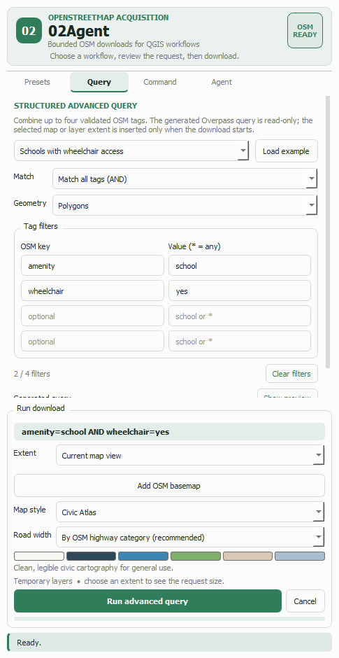
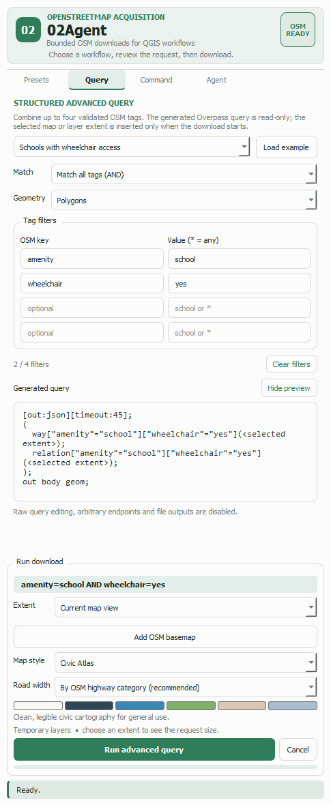

Guide 4 of 5
When no preset says quite what you mean — schools that are wheelchair accessible, parks that also contain a playground — the Query tab lets you say it in tags, see exactly what will be sent, and run it against the same bounded, tiled download engine.
Open the Query tab and pick one of the fourteen worked examples, then press Load example. It fills the match mode, the geometry scope and the tag filters at once, which is the quickest way to learn the shape of a query.
Examples include accessible schools, protected cycleways, public green space, named transit stops, hospitals with emergency access, EV charging, historic monuments, pedestrian-friendly streets and buildings that carry height data.
Edit any of it afterwards — the examples are starting points, not templates you are locked into.

Match decides the logic, and it is the single most important choice on the tab:
leisure=park OR leisure=garden OR
landuse=grass.
amenity=school AND wheelchair=yes returns
only the accessible schools.
Geometry scopes the request to points, lines, polygons, or all three. Narrowing it makes the query faster and avoids irrelevant empty layers — a query about buildings has no business asking for nodes.
One key, once, in ALL mode
amenity=school AND amenity=hospital can never match
anything, because a feature has one amenity value. The plugin
refuses that combination instead of running a query guaranteed to return
nothing. Use ANY matching for it.
Up to four key/value pairs. The key is an OpenStreetMap tag name
(amenity, building, highway,
leisure, historic…); both fields autocomplete from
common values.
Leave the value blank or type * to match any value of that
key — building=* means every building regardless of type. That is
usually what you want when the key alone identifies the thing.
Keys and values are validated as you type. Characters that would change the meaning of the generated query are rejected outright, which is why there is no free-text query box anywhere in the plugin.

Show preview reveals the exact Overpass query your choices produce. It is read-only and it is the truth: there is no second, hidden query. For the AND example above it becomes
[out:json][timeout:45];
(
way["amenity"="school"]["wheelchair"="yes"](<selected extent>);
relation["amenity"="school"]["wheelchair"="yes"](<selected extent>);
);
out body geom;
Note <selected extent>. The real coordinates are substituted
only when you press Download, which is why the preview stays stable while you
pan the map. If the extent is wide, that one query becomes one query per tile
(Guide 3).
The run panel stays visible on this tab and the button reads Run advanced query. Extent, map style and road width all work exactly as they do for presets.
Every downloaded feature records what matched it. query_key and
query_value hold the first matching selector, and
matched_tags holds all of them as JSON — so after an ANY query you can
tell which branch each feature came from, and filter or style on it in QGIS.
The full original tag set is preserved in tags_json, so nothing
OpenStreetMap knew about a feature is lost just because it had no dedicated column.
What the Query tab deliberately does not do There is no raw Overpass editor, no custom endpoint field, no output path and no scripting hook. Everything reaching the network is assembled from validated tag fields against pinned hosts. That boundary is what makes the plugin safe to expose to an automation agent — see Guide 5.